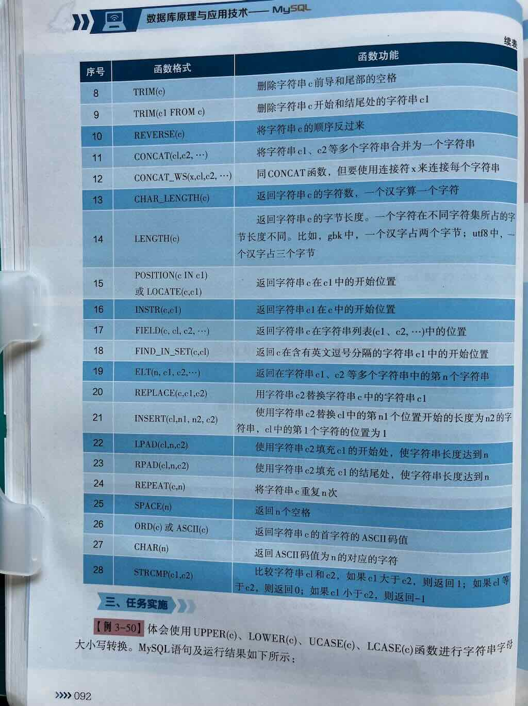
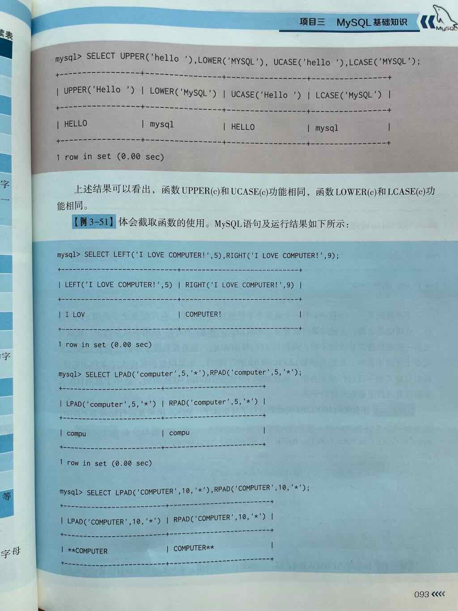
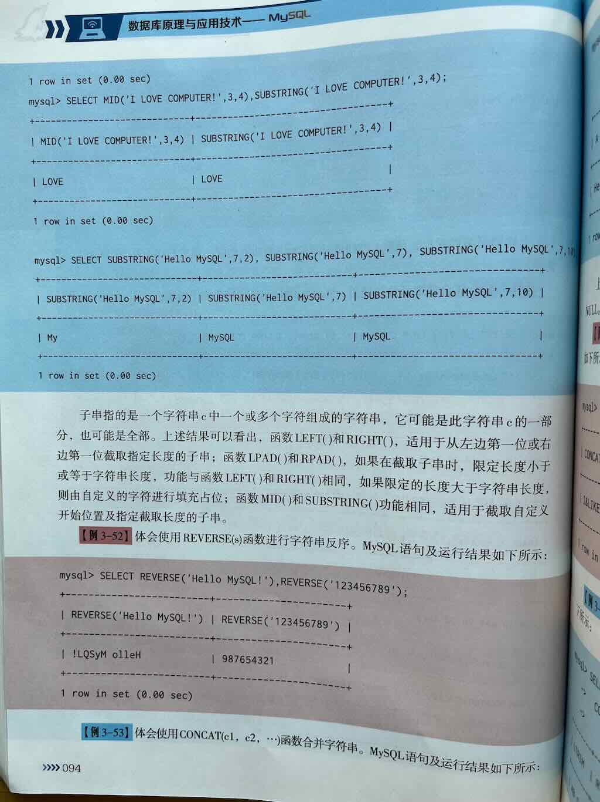
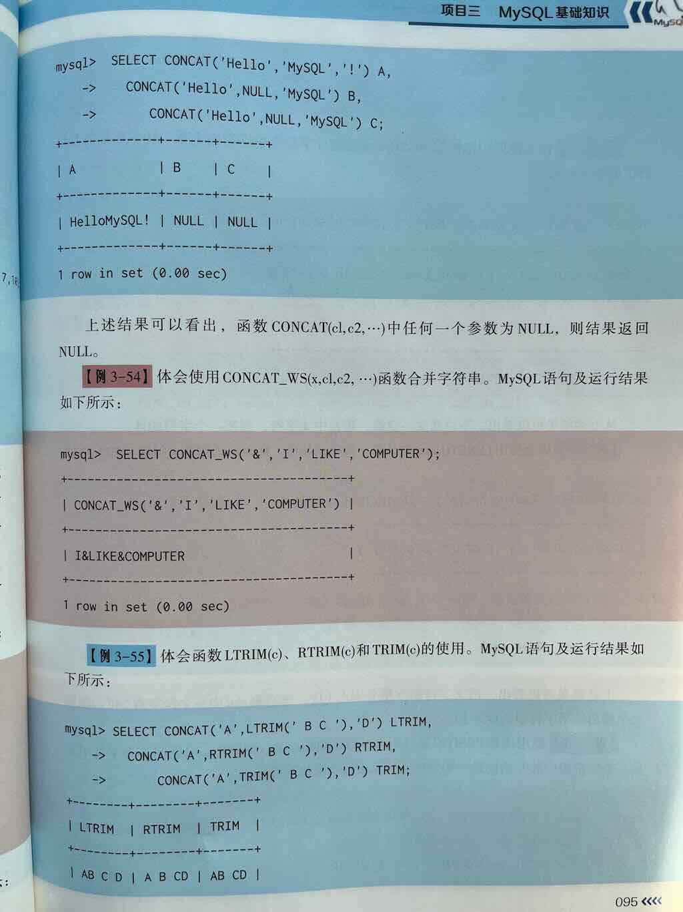
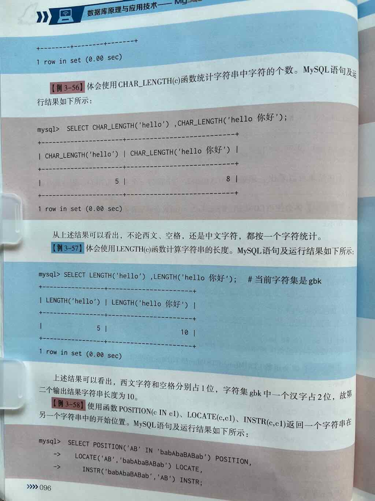
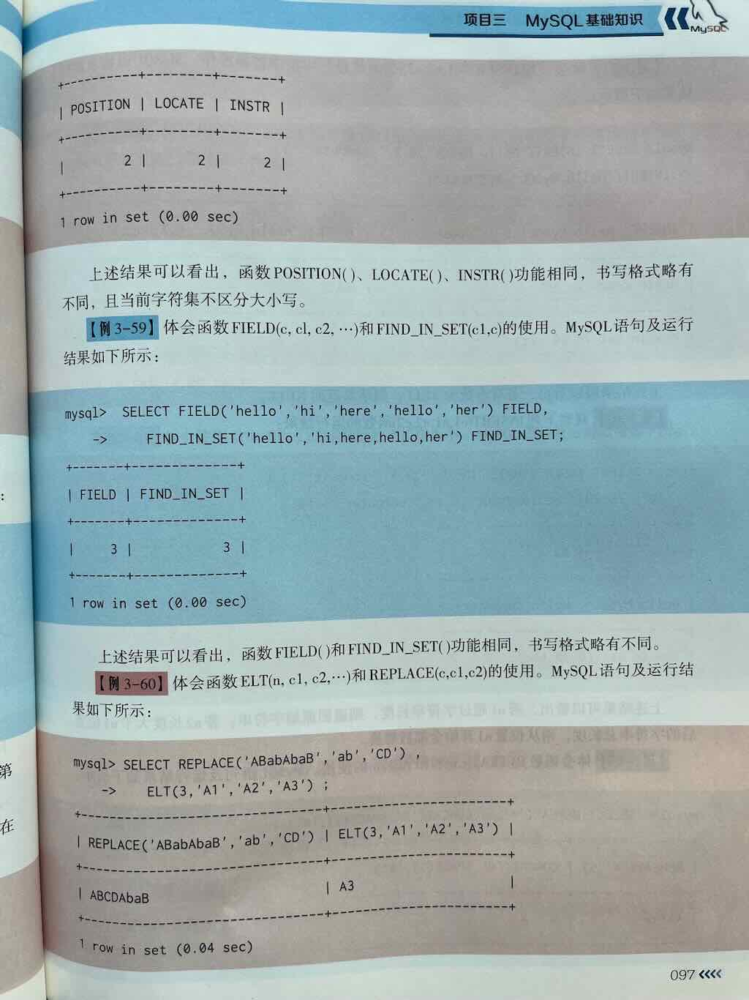
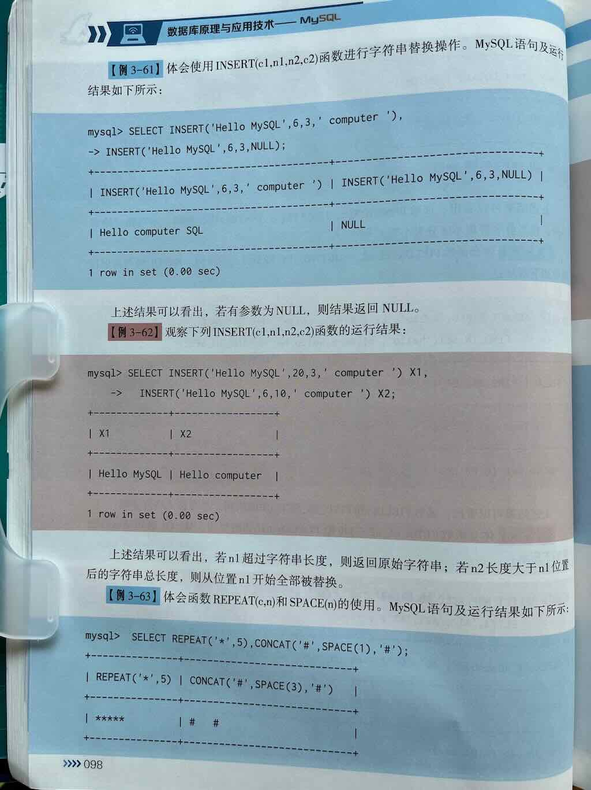
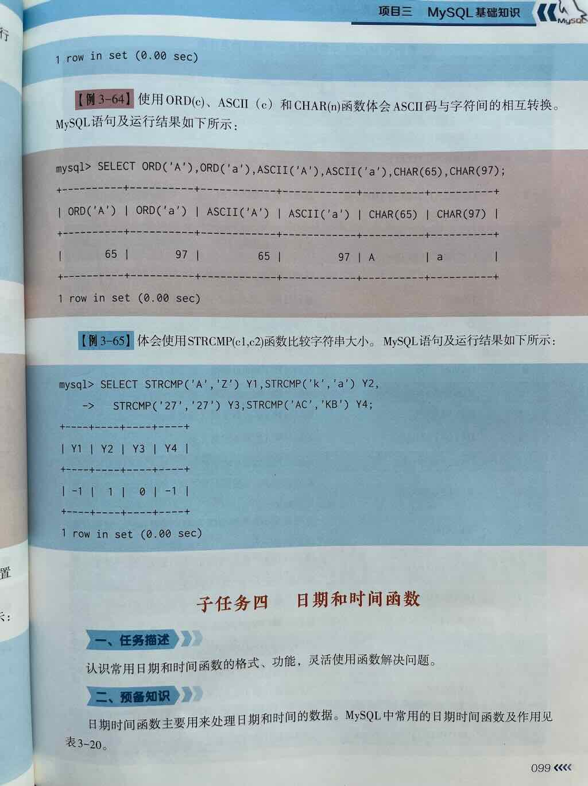

MySQL 中常见字符串函数的用法详解
在 MySQL 中，字符串函数（String Functions） 是用于对 字符串（VARCHAR, CHAR, TEXT 等类型）进行各种操作 的内置函数，它们在数据清洗、格式化、搜索、拼接、截取等场景中非常常用。
掌握这些函数可以帮助你：
- 🔤 对字符串进行拼接、截取、大小写转换
- ✂️ 进行子串提取、查找、替换
- 🧹 实现去除空格、格式化、填充
- 🔍 支持模糊查询、字符串匹配、编码处理









🧩 一、字符串拼接类函数
1. CONCAT(str1, str2, ...) —— 拼接多个字符串
作用： 将多个字符串拼接成一个字符串
示例（字段拼接）：
2. CONCAT_WS(separator, str1, str2, ...) —— 带分隔符的拼接
作用： 使用指定的分隔符 separator 拼接多个字符串
应用场景： 拼接日期、姓名、地址等带分隔内容
📏 二、字符串长度与信息类函数
3. LENGTH(str) —— 返回字符串的字节长度
⚠️ 注意：
LENGTH()返回的是字节长度，不是字符数！
4. CHAR_LENGTH(str) 或 CHARACTER_LENGTH(str) —— 返回字符串的字符数
✅ 推荐在需要统计字符个数时使用（如用户名长度、昵称等）
🔤 三、大小写转换类函数
5. UPPER(str) 或 UCASE(str) —— 转换为大写字母
6. LOWER(str) 或 LCASE(str) —— 转换为小写字母
✂️ 四、字符串截取类函数
7. SUBSTRING(str, pos, len) 或 SUBSTR(str, pos, len)
作用： 从字符串 str 的指定位置 pos 开始，截取长度为 len 的子串
- pos 可以是正数（从左开始）或负数（从右开始）
- len 是可选的，不填则截取到末尾
SELECT SUBSTRING('Hello MySQL', 7); -- 结果：'MySQL'（从第7个字符开始）
SELECT SUBSTRING('Hello MySQL', 1, 5); -- 结果：'Hello'
SELECT SUBSTRING('Hello MySQL', -5); -- 结果：'MySQL'（倒数第5个字符开始）
8. LEFT(str, len) —— 从左边开始截取指定长度
9. RIGHT(str, len) —— 从右边开始截取指定长度
🔍 五、字符串查找与位置类函数
10. LOCATE(substr, str) 或 INSTR(str, substr) —— 查找子串位置
作用： 返回 substr 在 str 中第一次出现的位置（从1开始），找不到返回 0
SELECT LOCATE('My', 'Hello MySQL'); -- 结果：7
SELECT INSTR('Hello MySQL', 'My'); -- 结果：7（与 LOCATE 顺序相反）
11. POSITION(substr IN str) —— 类似 LOCATE（标准 SQL 写法）
🔧 六、字符串替换类函数
12. REPLACE(str, old_str, new_str) —— 替换子串
作用： 将字符串中的 old_str 替换为 new_str
应用场景： 数据脱敏、统一替换敏感词、格式标准化
🧼 七、字符串去除与填充类函数
13. TRIM([remstr FROM] str) —— 去除字符串两端空格或指定字符
LTRIM(str)：去除左边空格RTRIM(str)：去除右边空格
14. LPAD(str, len, padstr) / RPAD(str, len, padstr) —— 左填充 / 右填充
作用： 用指定字符 padstr 将字符串填充到指定长度 len
✅ 应用于：格式化输出、编号补零等场景
🆔 八、字符串格式化与编码类函数
15. FORMAT(X, D) —— 数字格式化（带千分位，返回字符串）
⚠️ 注意：虽然常用于数字，但返回的是格式化后的字符串
16. ASCII(str) —— 返回字符串第一个字符的 ASCII 码
17. CHAR(N) —— 根据 ASCII 码返回对应字符
✅ 常用字符串函数速查表
| 函数 | 说明 | 示例 | 结果 |
|---|---|---|---|
CONCAT(str1, str2) |
拼接字符串 | CONCAT('Hello', 'MySQL') |
'HelloMySQL' |
CONCAT_WS('-', str1, str2) |
带分隔符拼接 | CONCAT_WS('-', '2024', '06') |
'2024-06' |
LENGTH(str) |
字节长度 | LENGTH('你好') |
6（UTF-8） |
CHAR_LENGTH(str) |
字符个数 | CHAR_LENGTH('你好') |
2 |
UPPER(str) |
转大写 | UPPER('abc') |
'ABC' |
LOWER(str) |
转小写 | LOWER('ABC') |
'abc' |
SUBSTRING(str, pos, len) |
截取子串 | SUBSTRING('abcde', 2, 3) |
'bcd' |
LEFT(str, len) |
左侧截取 | LEFT('abcde', 2) |
'ab' |
RIGHT(str, len) |
右侧截取 | RIGHT('abcde', 2) |
'de' |
LOCATE(substr, str) |
查找位置 | LOCATE('bc', 'abcde') |
2 |
REPLACE(str, old, new) |
替换子串 | REPLACE('abab', 'ab', 'x') |
'xx' |
TRIM(str) |
去两端空格 | TRIM(' a ') |
'a' |
LPAD(str, len, pad) |
左填充 | LPAD('Hi', 5, '*') |
'**Hi' |
RPAD(str, len, pad) |
右填充 | RPAD('Hi', 5, '*') |
'Hi***' |
📌 总结
| 功能类别 | 常用函数 | 用途简述 |
|---|---|---|
| 拼接 | CONCAT(), CONCAT_WS() |
拼接多个字符串，支持分隔符 |
| 长度/字符数 | LENGTH(), CHAR_LENGTH() |
获取字节长度或字符个数 |
| 大小写转换 | UPPER(), LOWER() |
转换大小写 |
| 截取子串 | SUBSTRING(), LEFT(), RIGHT() |
提取部分字符串 |
| 查找位置 | LOCATE(), INSTR(), POSITION() |
查找子串位置 |
| 替换 | REPLACE() |
替换指定子串 |
| 去除空格/填充 | TRIM(), LPAD(), RPAD() |
清理或格式化字符串 |
| 格式化/编码 | FORMAT(), ASCII(), CHAR() |
数字格式化、字符编码处理 |
✅ 下一步建议
你可以尝试以下练习来巩固字符串函数的使用：
- ✅ 使用
CONCAT_WS拼接用户的姓和名，中间加空格 - ✅ 用
SUBSTRING提取邮箱的用户名部分（@ 之前） - ✅ 用
REPLACE对敏感词进行脱敏处理（如将手机号中间4位替换为****） - ✅ 使用
LEFT+RIGHT提取身份证的年份或地区码 - ✅ 用
TRIM清理用户输入的前后空格
如你希望获取：
- ✅ 这些函数的 建表 + 数据 + 实战查询示例
- ✅ 如何在 WHERE 条件、ORDER BY、GROUP BY 中使用字符串函数
- ✅ 或者与 LIKE 模糊匹配、正则表达式 REGEXP 结合使用
欢迎继续提问！我可以为你提供完整的 SQL 实战案例与详细解释。
MySQL 中 CONCAT() 函数详解
CONCAT() 是 MySQL 中用于 将多个字符串或字段值连接成一个字符串 的核心函数，适用于数据格式化、动态拼接字段等场景。以下是其详细用法及示例。
一、基本语法
- 参数： -str1, str2, ..., strN：可以是字符串字面量、字段名、表达式或 NULL。
- 最少需要 1 个参数，最多支持 255 个参数。
- 返回值：
- 所有参数按顺序拼接后的字符串。
- 若任一参数为 NULL，则整个结果为 NULL（需特别注意）。
二、核心功能与示例
1. 基本字符串拼接
2. 字段值拼接
-- 将 first_name 和 last_name 合并为全名
SELECT CONCAT(first_name, ' ', last_name) AS full_name
FROM employees;
+-----------------+
| full_name |
+-----------------+
| John Doe |
| Jane Smith |
+-----------------+
3. 处理 NULL 值
若参数中存在 NULL，结果将变为 NULL。需用 COALESCE() 或 IFNULL() 处理：
-- 使用 COALESCE 替换 NULL 为空字符串
SELECT CONCAT(
COALESCE(first_name, ''),
' ',
COALESCE(last_name, '')
) AS safe_full_name
FROM employees;
三、与其他函数的结合使用
1. 与 CONCAT_WS() 的区别
CONCAT()：直接拼接所有参数，无分隔符。CONCAT_WS(separator, str1, str2, ...)：自动添加分隔符，忽略NULL。
2. 与 CAST() 转换数据类型
拼接非字符串类型（如数字、日期）时需显式转换：
四、实际应用场景
场景 1：生成完整地址
输出示例：+---------------------------------+
| full_address |
+---------------------------------+
| 123 Main St, Beijing, 100001 |
+---------------------------------+
场景 2：动态生成日志格式
场景 3：处理多语言内容
-- 中英文混合拼接
SELECT CONCAT('欢迎回来, ', username, '! Your last login: ', last_login) AS greeting
FROM users;
五、注意事项
1. NULL 值处理
- 默认行为：任一参数为
NULL，结果即为NULL。 - 解决方案：
- 使用
COALESCE()替换NULL： - 使用
IFNULL()指定默认值：
2. 性能优化
- 避免大字段拼接：对
TEXT或BLOB类型频繁拼接可能影响性能。 - 预计算字段：对高频拼接需求，可新增存储生成列：
3. 字符集一致性
- 确保所有参数的字符集兼容（如
utf8mb4），否则可能引发乱码：
六、总结
- 核心作用：灵活拼接字符串，支持动态数据格式化。
- 最佳实践：
- 使用
CONCAT_WS()简化分隔符处理。 - 用
COALESCE()或IFNULL()规避NULL问题。 - 对高频拼接字段预计算存储。
- 适用场景：
- 地址、姓名、日志等字段拼接。
- 动态生成报告内容。
- 多语言混合内容处理。
掌握 CONCAT() 的使用技巧，可显著提升数据处理的灵活性和效率！
MySQL 中 LEFT() 函数详解
LEFT() 是 MySQL 中用于从字符串 左侧截取指定长度字符 的函数，适用于提取固定格式数据的场景（如订单号前缀、身份证号前6位等）。以下是详细说明及用法示例。
一、语法与参数
- 参数说明： -str：原始字符串（可以是字段名或字符串字面量）。
- length：要截取的字符数（必须是正整数）。
- 返回值：
- 从字符串左侧开始截取的子字符串。
- 若 length 为 0 或负数，返回空字符串 ''。
- 若 str 为 NULL，返回 NULL。
二、核心功能与示例
1. 基础截取
| 场景 | 示例 | 输出结果 | 说明 |
|---|---|---|---|
| 截取前 N 个字符 | LEFT('Hello World', 5) |
'Hello' |
截取前5个字符 |
| 长度等于字符串长度 | LEFT('MySQL', 5) |
'MySQL' |
完整返回原字符串 |
| 长度超过字符串长度 | LEFT('abc', 10) |
'abc' |
返回整个字符串 |
| 空字符串或长度为0 | LEFT('', 3) |
'' |
返回空字符串 |
2. 多字节字符处理（如中文、Emoji）
3. 边界条件处理
| 场景 | 示例 | 输出结果 |
|---|---|---|
length 为负数 |
LEFT('Hello', -2) |
'' |
length 为0 |
LEFT('Hello', 0) |
'' |
str 为 NULL |
LEFT(NULL, 3) |
NULL |
三、与 SUBSTRING() 的区别
| 函数 | 语法 | 特点 | 适用场景 |
|---|---|---|---|
LEFT() |
LEFT(str, length) |
仅支持从左侧截取固定长度 | 提取固定前缀（如订单号） |
SUBSTRING() |
SUBSTRING(str, start, len) |
支持任意起始位置和长度 | 灵活截取任意位置的子字符串 |
四、实际应用场景
场景 1：提取身份证号前6位（行政区划代码）
场景 2：截取订单号前缀（如年月部分）
场景 3：格式化手机号显示
-- 显示前3位 + **** + 后4位（如 '138****5678'）
SELECT CONCAT(LEFT(phone, 3), '****', RIGHT(phone, 4)) AS masked_phone
FROM users;
五、性能与注意事项
- 索引影响：
- 在
WHERE子句中直接使用LEFT()可能导致全表扫描。 -
优化方案：
- 预存截取结果到新字段并建立索引。
- 使用函数索引（MySQL 8.0+）：
-
多字节字符集：
-
LEFT()按字符截取，而非字节。确保字符集支持（如utf8mb4）。 -
长度参数处理：
length必须是正整数，否则返回空字符串或无效结果。
六、总结
- 核心作用：快速截取字符串左侧固定长度的内容。
- 最佳实践：
- 处理固定格式数据（如日期、编码、前缀）。
- 结合
CONCAT()或RIGHT()实现复杂格式化。 - 适用场景：
- 数据清洗（提取关键字段）。
- 敏感信息脱敏（隐藏部分内容）。
- 日志分析（截取固定格式的时间戳）。
掌握 LEFT() 的使用方法，可以高效完成字符串截取需求，但需注意性能优化和字符集兼容性。
MySQL 的 LENGTH() 函数详解
LENGTH() 是 MySQL 中用于计算字符串 字节长度 的函数。它返回字符串的存储字节数，而不是字符数量，因此其返回值会受到字符集的影响。以下是该函数的详细说明及用法示例。
1. 语法
- 参数：-
str：需要计算长度的字符串。可以是字段名、字符串字面量或表达式。
- 如果输入为 NULL，则返回 NULL。
2. 核心特性
| 特性 | 说明 |
|---|---|
| 字节长度 | 返回字符串占用的字节数（而非字符数） |
| 字符集敏感 | 不同字符集下，相同字符串的字节长度可能不同 |
| 多字节字符处理 | 对多字节字符（如中文、Emoji）会按实际编码计算字节数 |
| 空格处理 | 包含空格、换行符等空白字符时，会计算其字节长度 |
| 二进制数据 | 对二进制字符串（如 BLOB），直接返回字节长度 |
3. 与 CHAR_LENGTH() 的区别
| 函数 | 返回值 | 示例（字符串：'你好'） |
|---|---|---|
LENGTH() |
字节长度 | 在 utf8mb4 字符集下返回 6（每个汉字占 3 字节） |
CHAR_LENGTH() |
字符数量 | 返回 2（两个汉字） |
4. 不同字符集的影响
示例表
-- 创建不同字符集的表
CREATE TABLE test_charset (
str_latin1 VARCHAR(10) CHARACTER SET latin1,
str_utf8mb4 VARCHAR(10) CHARACTER SET utf8mb4
);
-- 插入数据
INSERT INTO test_charset VALUES
('abc', 'abc'),
('é', 'é'), -- Latin1 字符
('hello', '你好'); -- 中文字符
查询结果
SELECT
str_latin1,
LENGTH(str_latin1) AS len_latin1,
str_utf8mb4,
LENGTH(str_utf8mb4) AS len_utf8mb4
FROM test_charset;
str_latin1 |
len_latin1 |
str_utf8mb4 |
len_utf8mb4 |
|---|---|---|---|
abc |
3 | abc |
3 |
é |
1 | é |
2 |
hello |
5 | 你好 |
6 |
- 说明：
latin1字符集：每个字符占 1 字节。utf8mb4字符集：- 英文字符：1 字节。
- 拉丁扩展字符（如
é）：2 字节。 - 中文字符：3 字节。
- Emoji：4 字节。
5. 常见使用场景
场景 1：验证存储限制
-- 检查字段是否超出 VARCHAR(255) 的字节限制（假设为 utf8mb4）
SELECT
column_name,
LENGTH(column_name) AS byte_length
FROM table
WHERE LENGTH(column_name) > 255 * 4; -- utf8mb4 最大 4 字节/字符
场景 2：处理二进制数据
场景 3：数据清洗
-- 去除末尾空格（需结合 TRIM）
UPDATE users
SET username = TRIM(username)
WHERE LENGTH(username) != LENGTH(TRIM(username));
6. 注意事项
- 隐式类型转换：
-
若输入为数值或日期，MySQL 会先将其转换为字符串再计算长度。
-
NULL 值处理：
-
输入为
NULL时返回NULL。
-
性能问题：
- 对大表频繁使用
LENGTH()可能导致全表扫描，建议结合索引优化。
7. 总结
- 适用场景：需精确计算存储空间时（如验证字段长度、处理二进制数据）。
- 避坑指南：
- 若需统计字符数，使用
CHAR_LENGTH()。 - 注意字符集对计算结果的影响。
- 处理多语言文本时，优先使用
utf8mb4字符集。
掌握 LENGTH() 的使用方法，可以更精准地管理数据库存储和优化查询性能！
MySQL 中的 LOCATE() 函数详解
LOCATE() 函数用于查找子字符串在字符串中的首次出现位置，支持指定起始搜索点，是处理字符串定位需求的核心工具。
一、语法与参数
- 参数说明： -substr：要查找的子字符串。
- str：被搜索的主字符串。
- start_pos（可选）：搜索起始位置（默认从第1位开始）。
- 返回值：
- 找到时返回首次出现的位置（从1开始计数）。
- 未找到时返回 0。
- 若 substr 为空字符串，返回 1。
二、基础用法示例
示例 1：查找简单子字符串
示例 2：指定起始位置
示例 3：子字符串不存在
示例 4：空字符串处理
三、与相似函数的区别
| 函数 | 语法 | 参数顺序 | 起始位置支持 | 标准兼容性 |
|---|---|---|---|---|
LOCATE() |
LOCATE(substr, str, start) |
substr 先 | ✅ 是 | MySQL 特有 |
INSTR() |
INSTR(str, substr) |
str 先 | ❌ 否 | MySQL 特有 |
POSITION() |
POSITION(substr IN str) |
substr 先 | ❌ 否 | SQL 标准 |
四、实际应用场景
场景 1：邮箱格式验证
-- 检查邮箱是否包含 '@' 和 '.'
SELECT
email,
IF(LOCATE('@', email) > 0 AND LOCATE('.', email, LOCATE('@', email)) > 0,
'有效',
'无效') AS validity
FROM users;
场景 2：提取 URL 域名
-- 从 URL 中提取域名部分（如 'https://www.example.com/path' → 'www.example.com'）
SELECT
url,
SUBSTRING(
url,
LOCATE('//', url) + 2,
LOCATE('/', url, LOCATE('//', url) + 2) - (LOCATE('//', url) + 2)
) AS domain
FROM websites;
场景 3：查找第 N 次出现的子字符串
-- 查找字符串中第二个 'a' 的位置（如 'banana' → 4）
SET @str = 'banana';
SET @first_pos = LOCATE('a', @str);
SELECT LOCATE('a', @str, @first_pos + 1); -- 输出 4
五、性能优化与注意事项
- 索引影响：
- 在
WHERE子句中直接使用LOCATE()可能导致全表扫描。 -
优化方案：预计算并存储关键位置值，或使用函数索引（MySQL 8.0+）。
-
大小写敏感性：
- 结果受数据库校对规则（Collation）影响。
-
示例：若校对规则为
utf8mb4_bin，则区分大小写： -
多字节字符处理：
- 对中文、Emoji 等多字节字符，按实际字节计算位置。
六、常见问题解答
Q1：如何反向查找子字符串（从右向左）？
-- 使用 LENGTH() 和 REVERSE() 组合
SELECT LENGTH(str) - LOCATE(REVERSE(substr), REVERSE(str)) + 1 AS reverse_pos;
Q2：如何统计子字符串出现的总次数？
-- 通过循环或程序计算
SET @count = 0;
SET @start = 1;
WHILE @start > 0 DO
SET @pos = LOCATE('a', 'banana', @start);
IF @pos > 0 THEN
SET @count = @count + 1;
SET @start = @pos + 1;
ELSE
SET @start = 0;
END IF;
END WHILE;
SELECT @count; -- 输出 3
七、总结
- 核心价值：精准定位子字符串，支持复杂文本解析。
- 最佳实践：
- 结合
SUBSTRING()实现动态截取。 - 预计算关键位置提升查询性能。
- 注意字符集和校对规则的影响。
- 适用场景：数据清洗、格式验证、日志分析等。
MySQL 中 LOWER() 函数详解
LOWER() 是 MySQL 中用于将字符串转换为全小写的函数，适用于数据规范化、大小写不敏感搜索等场景。以下是其详细说明及使用指南。
1. 基本语法
- 参数：-
str：需要转换的字符串，可以是字段名、字符串字面量或表达式。- 如果
str 为 NULL，返回 NULL。
- 返回值：全小写格式的字符串。
2. 核心功能
| 场景 | 输入示例 | 输出结果 | 说明 |
|---|---|---|---|
| 常规英文转换 | LOWER('HELLO') |
'hello' |
大写字母转为小写 |
| 符号和数字处理 | LOWER('123!@#Ab') |
'123!@#ab' |
非字母字符保持不变 |
| 多语言字符支持 | LOWER('CAFÉ') |
'café' |
支持重音字符（依赖字符集） |
| 中文字符处理 | LOWER('你好') |
'你好' |
无大小写概念，原样返回 |
| 空值处理 | LOWER(NULL) |
NULL |
输入为 NULL 时返回 NULL |
3. 与 LCASE() 的关系
- 等价性：
LOWER()和LCASE()是 MySQL 中的同义词，功能完全相同。 - 示例：
4. 字符集与多字节支持
支持的字符集
latin1（西欧语言）utf8/utf8mb4（多语言，包括 Emoji）gbk（中文字符集）
多字节字符示例
-- 德语字符
SELECT LOWER('ÄÖÜ'); -- 输出 'äöü'（依赖字符集配置）
-- 法语字符
SELECT LOWER('ÉÀÈ'); -- 输出 'éàè'
-- 中文字符
SELECT LOWER('数据库'); -- 输出 '数据库'
5. 实际应用场景
场景 1：数据规范化存储
场景 2：不区分大小写的查询
场景 3：格式化输出
6. 性能与索引优化
潜在问题
- 索引失效：在
WHERE子句中使用LOWER(column)可能导致无法使用索引。
函数索引（MySQL 8.0+）
7. 与其他函数的结合使用
示例 1：拼接全小写姓名
示例 2：提取域名并小写
8. 注意事项
- 校对规则（Collation）：
- 若校对规则为大小写不敏感（如
utf8mb4_general_ci），直接比较可能无需LOWER()。 -
明确大小写敏感时使用
utf8mb4_bin。 -
性能开销：
-
对大字段（如
TEXT）频繁使用LOWER()可能影响性能。 -
二进制数据：
- 对
BINARY或BLOB类型数据，LOWER()可能无法正确转换。
总结
- 核心作用：规范化文本格式，支持跨大小写查询。
- 适用场景：数据清洗、报告生成、不区分大小写的搜索。
- 避坑指南：
- 优先在插入数据时转换格式，而非查询时。
- 结合索引策略优化性能。
- 注意字符集和校对规则的影响。
掌握 LOWER() 的用法，可以显著提升文本处理的灵活性和效率！
MySQL 中的 RIGHT() 函数详解
RIGHT() 函数用于从字符串的 右侧（末尾） 提取指定数量的字符，适用于需要截取固定后缀或末尾数据的场景。以下是其详细说明及使用指南。
一、语法与参数
- 参数说明： -str：原始字符串（可以是字段名或字符串字面量）。
- length：要截取的字符数（必须为正整数）。
- 返回值：
- 从字符串右侧开始截取的子字符串。
- 若 length 为 0 或负数，返回空字符串 ''。
- 若 str 为 NULL，返回 NULL。
二、核心功能与示例
1. 基础截取
| 场景 | 示例 | 输出结果 | 说明 |
|---|---|---|---|
| 截取后 N 个字符 | RIGHT('Hello World', 5) |
'World' |
截取末尾5个字符 |
| 长度等于字符串长度 | RIGHT('MySQL', 5) |
'MySQL' |
完整返回原字符串 |
| 长度超过字符串长度 | RIGHT('abc', 10) |
'abc' |
返回整个字符串 |
| 空字符串或长度为0 | RIGHT('', 3) |
'' |
返回空字符串 |
2. 多字节字符处理（如中文、Emoji）
3. 边界条件处理
| 场景 | 示例 | 输出结果 |
|---|---|---|
length 为负数 |
RIGHT('Hello', -2) |
'' |
length 为0 |
RIGHT('Hello', 0) |
'' |
str 为 NULL |
RIGHT(NULL, 3) |
NULL |
三、与 SUBSTRING() 的关系
RIGHT() 可以看作是 SUBSTRING() 的简化形式，以下两种写法等价：
-- 使用 RIGHT()
SELECT RIGHT('Hello World', 5); -- 输出 'World'
-- 使用 SUBSTRING()
SELECT SUBSTRING('Hello World', -5); -- 输出 'World'
四、实际应用场景
场景 1：提取文件扩展名
场景 2：隐藏手机号中间四位
场景 3：提取身份证号后4位（校验码）
五、性能与注意事项
- 索引影响：
- 在
WHERE子句中直接使用RIGHT()可能导致全表扫描。 -
优化方案：
- 预存截取结果到新字段并建立索引。
- 使用函数索引（MySQL 8.0+）：
-
多字节字符集：
-
RIGHT()按字符截取，而非字节。确保字符集支持（如utf8mb4）。 -
长度参数处理：
length必须是正整数，否则返回空字符串或无效结果。
六、与其他函数的对比
| 函数 | 语法 | 特点 | 适用场景 |
|---|---|---|---|
RIGHT() |
RIGHT(str, length) |
从右侧截取固定长度的字符 | 提取后缀（如扩展名、校验码） |
LEFT() |
LEFT(str, length) |
从左侧截取固定长度的字符 | 提取前缀（如日期、区号） |
SUBSTRING() |
SUBSTRING(str, start, len) |
灵活截取任意位置的子字符串 | 复杂截取需求 |
七、总结
- 核心作用：快速截取字符串右侧固定长度的内容。
- 最佳实践：
- 处理固定格式数据（如文件扩展名、校验码）。
- 结合
CONCAT()或LEFT()实现复杂格式化。 - 适用场景：
- 数据清洗（提取关键字段）。
- 敏感信息脱敏（隐藏部分内容）。
- 格式验证（检查文件类型）。
掌握 RIGHT() 的使用方法，可以高效完成字符串截取需求，但需注意性能优化和字符集兼容性。
MySQL 中的 RTRIM() 函数详解
RTRIM() 是 MySQL 中用于 去除字符串右侧（末尾）空格或其他指定字符 的函数，适用于数据清洗、格式化输出等场景。以下是其详细说明及使用指南。
一、基本语法
- 参数： -str：需要处理的字符串（可以是字段名或字符串字面量）。
- 返回值：
- 去除右侧空格后的字符串。
- 若 str 为 NULL，返回 NULL。
二、核心功能
1. 去除右侧空格
| 输入示例 | 输出结果 | 说明 |
|---|---|---|
RTRIM(' Test ') |
' Test' |
仅去除右侧空格 |
RTRIM('MySQL ') |
'MySQL' |
末尾连续空格被清除 |
RTRIM(NULL) |
NULL |
输入为 NULL 时返回 NULL |
2. 与其他空白字符的关系
- 默认行为：
RTRIM()仅去除空格，不处理其他空白字符（如换行符\n、制表符\t）。 - 扩展需求：若需去除其他字符，需结合
TRIM()函数：
三、与相关函数的对比
| 函数 | 语法 | 功能 | 示例 |
|---|---|---|---|
RTRIM() |
RTRIM(str) |
仅去除右侧空格 | RTRIM(' Hi ') → ' Hi' |
LTRIM() |
LTRIM(str) |
仅去除左侧空格 | LTRIM(' Hi ') → 'Hi ' |
TRIM() |
TRIM([选项] FROM str) |
可自定义去除方向及字符 | TRIM(BOTH 'x' FROM 'xxSQLx') → 'SQL' |
四、实际应用场景
场景 1：清理用户输入数据
场景 2：格式化输出
场景 3：数据一致性校验
五、性能与注意事项
- 索引影响：
- 在
WHERE子句中直接使用RTRIM()可能导致无法使用索引，引发全表扫描。 -
优化方案：
- 插入数据时预处理字段（如
INSERT ... VALUES (RTRIM(input))）。 - 创建生成列并建立索引（MySQL 5.7+）：
- 插入数据时预处理字段（如
-
字符集兼容性：
-
不同字符集中“空格”的定义可能不同（如全角空格
），RTRIM()仅处理标准半角空格。 -
多字节字符处理：
- 对中文字符、Emoji 等无影响，仅作用于末尾空格。
六、总结
- 核心作用：清理字符串右侧的空格，确保数据一致性。
- 适用场景：
- 用户输入清洗（如用户名、邮箱）。
- 格式化输出（如地址拼接）。
- 数据校验（检测非法空格）。
- 替代方案：
- 需去除其他字符时，使用
TRIM(TRAILING 'chars' FROM str)。 - 需去除所有空白字符时，结合正则表达式：
掌握 RTRIM() 的使用方法，可以高效处理字符串末尾空格问题，但需注意其局限性及性能影响！
MySQL 中 SUBSTRING() 函数详解
SUBSTRING() 是 MySQL 中用于从字符串中提取子字符串的核心函数，支持灵活的位置和长度控制，适用于数据清洗、格式化输出等场景。以下是其详细说明及使用指南。
一、语法与参数
- 参数说明： -str：待处理的字符串（可以是字段名或字符串字面量）。
- start：起始位置（从 1 开始计数；负数表示从末尾倒数）。
- length（可选）：截取长度（省略时截取到字符串末尾）。
- 返回值：
- 成功时返回子字符串。
- 若 str 为 NULL，返回 NULL。
- 若 start 超出字符串长度，返回空字符串 ''。
二、核心功能与示例
1. 基础截取
| 场景 | 示例 | 输出结果 | 说明 |
|---|---|---|---|
| 指定起始位置和长度 | SUBSTRING('Hello World', 7, 5) |
'World' |
从第7位开始截取5个字符 |
| 省略长度参数 | SUBSTRING('Database', 4) |
'abase' |
从第4位截取到末尾 |
| 负数起始位置 | SUBSTRING('Quadratically', -5) |
'ically' |
从倒数第5位截取到末尾 |
| 负数起始位置 + 长度 | SUBSTRING('abcdef', -3, 2) |
'de' |
从倒数第3位截取2个字符 |
2. 多字节字符处理（如中文、Emoji）
3. 参数边界处理
| 场景 | 示例 | 输出结果 |
|---|---|---|
start 超出字符串长度 |
SUBSTRING('abc', 5, 1) |
'' |
start 为0 |
SUBSTRING('abc', 0, 1) |
''（视为无效） |
length 为负数 |
SUBSTRING('abc', 2, -1) |
'' |
三、与相似函数的对比
| 函数 | 语法 | 功能 | 示例 |
|---|---|---|---|
SUBSTRING() |
SUBSTRING(str, start, len) |
灵活截取任意位置子字符串 | SUBSTRING('MySQL', 3, 3) → 'SQL' |
LEFT() |
LEFT(str, len) |
截取左侧指定长度的子字符串 | LEFT('Hello', 3) → 'Hel' |
RIGHT() |
RIGHT(str, len) |
截取右侧指定长度的子字符串 | RIGHT('World', 3) → 'rld' |
SUBSTR() |
SUBSTR(str, start, len) |
SUBSTRING() 的同义词 |
功能与 SUBSTRING() 完全相同 |
四、实际应用场景
场景 1：提取关键信息
-- 从 URL 中提取域名（如 'https://www.example.com/path' → 'www.example.com'）
SELECT
SUBSTRING(
url,
LOCATE('//', url) + 2,
LOCATE('/', url, LOCATE('//', url) + 2) - (LOCATE('//', url) + 2)
) AS domain
FROM websites;
场景 2：数据脱敏
-- 隐藏手机号中间四位（如 '13812345678' → '138****5678'）
SELECT
CONCAT(
LEFT(phone, 3),
'****',
SUBSTRING(phone, -4)
) AS masked_phone
FROM users;
场景 3：动态截取日志
-- 截取日志时间戳（如 '[2023-10-01] Error occurred' → '2023-10-01'）
SELECT
SUBSTRING(log_message, 2, 10) AS log_date
FROM system_logs
WHERE log_message LIKE '[____-__-__]%';
五、性能与注意事项
- 索引影响：
- 在
WHERE子句中直接使用SUBSTRING()可能导致全表扫描。 -
优化方案：预计算并存储截取结果，或使用函数索引（MySQL 8.0+）。
-
多字节字符集：
-
SUBSTRING()按字符截取，而非字节。确保字符集支持（如utf8mb4）。 -
NULL 值处理：
- 若任一参数为
NULL，返回NULL。
六、总结
- 核心价值：灵活截取子字符串，支持正向和逆向定位。
- 最佳实践：
- 结合
LOCATE()实现动态位置计算。 - 预存截取结果以优化查询性能。
- 适用场景：数据清洗、日志分析、敏感信息脱敏。
MySQL 中 UPPER() 函数详解
UPPER() 是 MySQL 中用于将字符串转换为全大写的函数。它适用于规范化数据格式或执行不区分大小写的查询。以下是该函数的详细说明及使用场景。
1. 基本语法
- 参数：-
str：需要转换的字符串，可以是字段名、字符串字面量或表达式。- 如果
str 为 NULL，返回 NULL。
- 返回值：全大写格式的字符串。
2. 核心功能
| 场景 | 输入示例 | 输出结果 | 说明 |
|---|---|---|---|
| 常规英文转换 | UPPER('Hello') |
'HELLO' |
小写字母转为大写 |
| 符号和数字处理 | UPPER('123!@#aB') |
'123!@#AB' |
非字母字符保持不变 |
| 多语言字符支持 | UPPER('café') |
'CAFÉ' |
支持重音字符（依赖字符集） |
| 中文字符处理 | UPPER('你好') |
'你好' |
无大小写概念，原样返回 |
| 空值处理 | UPPER(NULL) |
NULL |
输入为 NULL 时返回 NULL |
3. 与 UCASE() 的关系
- 等价性：
UPPER()和UCASE()是 MySQL 中的同义词，功能完全相同。 - 示例：
4. 字符集与多字节支持
支持的字符集
latin1（西欧语言）utf8/utf8mb4（多语言，包括 Emoji）gbk（中文字符集）
多字节字符示例
-- 德语字符
SELECT UPPER('äöüß'); -- 输出 'ÄÖÜSS'（依赖字符集配置）
-- 法语字符
SELECT UPPER('éàè'); -- 输出 'ÉÀÈ'
-- 中文字符
SELECT UPPER('数据库'); -- 输出 '数据库'
5. 实际应用场景
场景 1：数据规范化存储
场景 2：不区分大小写的查询
场景 3：格式化输出
6. 性能与索引优化
潜在问题
- 索引失效：在
WHERE子句中使用UPPER(column)可能导致无法使用索引。
函数索引（MySQL 8.0+）
7. 与其他函数的结合使用
示例 1：拼接全大写姓名
示例 2：提取域名并大写
8. 注意事项
- 校对规则（Collation）：
- 若校对规则为大小写不敏感（如
utf8mb4_general_ci），直接比较可能无需UPPER()。 -
明确大小写敏感时使用
utf8mb4_bin。 -
性能开销：
-
对大字段（如
TEXT）频繁使用UPPER()可能影响性能。 -
二进制数据：
- 对
BINARY或BLOB类型数据，UPPER()可能无法正确转换。
总结
- 核心作用：规范化文本格式，支持跨大小写查询。
- 适用场景：数据清洗、报告生成、不区分大小写的搜索。
- 避坑指南：
- 优先在插入数据时转换格式，而非查询时。
- 结合索引策略优化性能。
- 注意字符集和校对规则的影响。
掌握 UPPER() 的用法，可以显著提升文本处理的灵活性和效率！
练习:字符串函数查询
- 将邮箱名转换为全大写显示**
- 提取员工编号的前缀字母（如D001中的D）
- 从身份证号中提取出生年份（第7-10位）
- 查找邮箱地址中@符号的位置
- 去除职位字段右侧的空格（假设存在空格）
- 反转显示员工姓名
- 按自定义顺序排序部门（开发部 > 市场部 > 财务部）
- 检查身份证号最后一位是否是字母X
- 提取省份名称的前3个字符
- 从邮箱中提取域名（@后的部分）
- 将城市名称转换为全大写并反转显示
- 显示员工编号的后3位数字（如D001中的001）
- 计算身份证号的长度是否为18位
- 查找员工姓名中第一个空格的位置
- 按薪资降序排列，但优先显示开发部员工
- 将员工姓名格式化为“名-姓”（假设姓名为“张伟”格式）
- 检查邮箱是否以“.com”结尾
- 提取身份证号的最后4位（掩码处理用）
- 显示员工入职日期的年份平方值
- 查找姓名中包含“强”字的员工
- 按省份名称的倒序排列记录
- 将薪资格式化为千分位（如12345.67 → 12,345.67）
- 计算员工编号的数字部分（如D001 → 1）
- 显示邮箱用户名部分（@前的部分）
- 按城市名称的第2个字符排序
- 将性别字段转换为大写字母缩写（男→M，女→F）
- 检查身份证号第17位是否为奇数（判断性别）
- 组合显示省份和城市（格式：广东-深圳）
- 按邮箱域名的长度排序
- 统计各部门名称的字符长度
参考答案
1.箱名转换为全大写显示
- 提取员工编号的前缀字母（如D001中的D）
- 从身份证号中提取出生年份（第7-10位）
- 查找邮箱地址中@符号的位置
SELECT LOCATE('@', email) AS at_position FROM employees;
-- 或
SELECT POSITION('@' IN email) AS at_position FROM employees;
-- 或
SELECT INSTR(email, '@') AS at_position FROM employees;
- 去除职位字段右侧的空格（假设存在空格）
- 反转显示员工姓名
- 按自定义顺序排序部门（开发部 > 市场部 > 财务部）
SELECT * FROM employees
ORDER BY FIELD(department, '开发部', '市场部', '财务部', '人力部', '设计部', '行政部', '后勤部');
- 检查身份证号最后一位是否是字母X
- 提取省份名称的前1个字符
- 从邮箱中提取域名（@后的部分）
- 将城市名称转换为全大写并反转显示
- 显示员工编号的后3位数字（如D001中的001）
- 计算身份证号的长度是否为18位
- 查找员工姓名中第一个空格的位置
- 按薪资降序排列，但优先显示开发部员工
- 将员工姓名格式化为“名-姓”（假设姓名为“张伟”格式）
- 检查邮箱是否以“.com”结尾
- 提取身份证号的最后4位（掩码处理用）
- 显示员工入职日期的年份平方值
- 查找姓名中包含“强”字的员工
- 按省份名称的倒序排列记录
- 将薪资格式化为千分位（如12345.67 → 12,345.67）
- 计算员工编号的数字部分（如D001 → 1）
- 显示邮箱用户名部分（@前的部分）
- 按城市名称的第2个字符排序
- 将性别字段转换为大写字母缩写（男→M，女→F）
- 检查身份证号第17位是否为奇数（判断性别）
- 组合显示省份和城市（格式：广东-深圳）
- 按邮箱域名的长度排序
SELECT email,
LENGTH(SUBSTRING(email, LOCATE('@', email)+1)) AS domain_length
FROM employees
ORDER BY domain_length;
- 统计各部门名称的字符长度
1.查询字节长度
length()
用途：查询字符的字节长度。
语法
参数
- string：必需。字符串
返回值：整数或NUll
- 整数：表示字符串的长度
- 0：查询失败
示例
字符集
- gbk：使用2个字节存储一个汉字
- unicode：使用3个字节存储一个汉字
2.大小写转换
upper()
用途：将英文字符串转为全大写
语法
参数
- 英文文本：必需
示例
LOWER() 用途：将英文字符串转为全小写。
语法
参数
- 英文文本：必须
示例
使用场景
-- 插入数据时统一存储小写
INSERT INTO users (username) VALUES (LOWER('Admin123'));
-- 查找忽略大小写的用户名
SELECT * FROM users WHERE LOWER(username) = LOWER('admin');
-- 将标题转为小写格式
SELECT LOWER(title) AS lowercase_title FROM articles;
-- 批量更新邮箱为小写
UPDATE employees
SET email = LOWER(email)
WHERE email REGEXP '[A-Z]'; -- 仅处理含大写字母的记录
3.删除空格
rtrim()
用途：删除字符串尾随空格。
语法
参数
- string：必须，要删除空格的字符串
示例
4.反转字符
reverse()
用途：反转字符串字符顺序。
语法
参数
- string：必须，要反转顺序的字符串
示例
5.自定义排序
field()
用途：返回值列表中值的索引位置。
注意：如果在值列表中找不到指定的值，则此函数将返回0。如果值为null，则此函数将返回0。
语法
参数
- value：必须，要查的值
- val1：值列表
示例
6.提取字符串
left()
用途：从左起截取-指定长度字符
语法
参数
- str：必需，指定提取的字符串
- length：必需。要提取的字符数。如果此参数大于字符串中的字符数，则此功能将返回全部字符串
示例：
right()
substring() 用途：从指定位置截取字符串
语法
参数
- str：必需，要截取的字符串。
- start ：必需的。开始位置。可以是正数或负数。如果是正数，则此函数从字符串的开头提取。如果是负数，则此函数从字符串的末端提取
- [length]：可选。要提取的字符数。如果省略，将返回整个字符串（从开始位置）
示例
SELECT SUBSTRING('Hello World', 7); -- 输出 'World'
SELECT SUBSTRING('Hello World', 7, 3); -- 输出 'Wor'
7.查询字符位置
locate() 用途：返回子字符串首次出现的位置（可指定起始点）。如果在原始字符串中找不到子字符串，则此功能返回0。大小写不敏感。
注意：如果在值列表中找不到指定的值，则此函数将返回0。如果值为null，则此函数将返回0。
语法
参数
-
substring：必需的。子字符串
-
string：必需的。主字符串
示例
SELECT LOCATE("3", "W3Schools.com") AS MatchPosition;
SELECT LOCATE("com", "W3Schools.com", 3) AS MatchPosition;
SELECT LOCATE('lo', 'Hello'); -- 输出 4（从第1位开始找）
SELECT LOCATE('o', 'Hello', 5); -- 输出 5
- 默认从第1个字符开始搜索
- 指定从第6个字符开始搜索
- 子字符串不存在时返回0
- 指定起始位置超过字符串长度
关键特性
| 场景 | 结果 | 说明 |
|---|---|---|
start 是正整数且有效 |
位置值 | 返回从 start 位置后的首次匹配位置 |
start 是0或负数 |
0 | 无效参数，直接返回0 |
start 超出字符串长度 |
0 | 搜索范围超出实际内容 |
子字符串为空字符串 ('') |
1 | 空字符串在任何位置都被认为存在 |
position()
用途：返回字符串中第一次出现的位置。如果在原始字符串中找不到子字符串，则此功能返回0。
语法
参数
- substring：必需的。在字符串中搜索的子字符串
- string：必需的。将要搜索的原始字符串
示例
SELECT POSITION("3" IN "W3Schools.com") AS MatchPosition;
SELECT POSITION('@' IN 'user@example.com'); -- 输出 5
instr() 用途：instr（）函数返回另一个字符串中首次出现字符串的位置。不区分大小写
语法
参数
- stinrg1：必需的。主字符串
- sting2：必需的。子字符串。如果找不到字符串2，此功能返回0
示例
8.关键区别与适用场景
| 函数 | 特点 | 典型应用场景 |
|---|---|---|
UPPER/UCASE |
统一数据格式 | 用户输入标准化、不区分大小写查询 |
LEFT/SUBSTRING |
精准提取部分数据 | 截取编码、日期、关键词 |
REVERSE |
反转字符顺序 | 生成镜像文本、特殊加密逻辑 |
FIELD |
自定义排序优先级 | 业务规则排序（如状态顺序） |
LOCATE/INSTR |
子串位置查找（参数顺序不同） | 解析邮箱、URL、关键词定位 |
9.常见应用
- 组合使用：
- 处理空值：
- 动态排序：